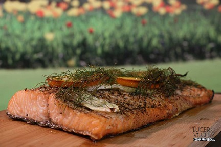

Platillo
Salmón ahumado con aromas de vino tinto

El salmón ahumado con aromas de vino tinto es una exquisitez culinaria que combina la riqueza del salmón con los matices y la profundidad de sabor del vino tinto. Este plato ofrece una experiencia gastronómica única que seduce los sentidos con cada bocado.
Ingredientes:
- 1200 gr de Salmon fresco con piel.
- 60 gr de semillas de cilantro molidas gruesas.
- 60 gr de pimienta negra molida.
- 60 gr de semillas de hinojo molidas.
- 100 gr de hinojo fresco.
- 1 naranja en rodajas.
- 30 gr de sal de mar.
- 50 ml de aceite de oliva.
- 100 ml de vino tinto.
- 300 ml de agua.
- 1 tabla de madera para ahumar.
Preparación:
- Sumergir la madera en el vino con agua durante no menos de 20 minutos.
- Formar brasas de carbón, buscando el fuego alto.
- En una bandeja grande disponer el salmón con la piel para abajo.
- Aceitar la carne uniformemente y agregar la sal y las especias.
- Disponer el salmón en la tabla y coronar con las naranjas y las ramas de hinojo.
- Transferir la tabla con el salmón a la parrilla, y tapar.
- Óptimamente se debe alcanzar una temperatura de 180°C, durante 25 minutos.
- Servir
Más información aquí